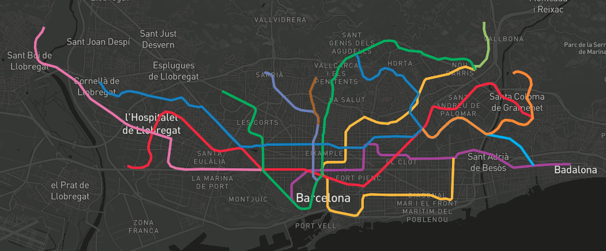
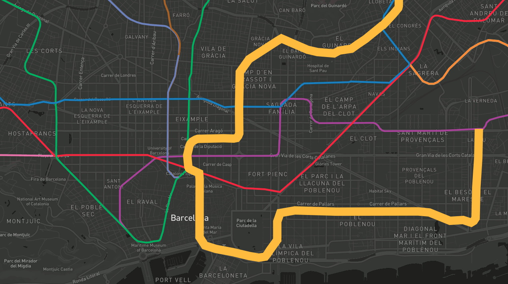
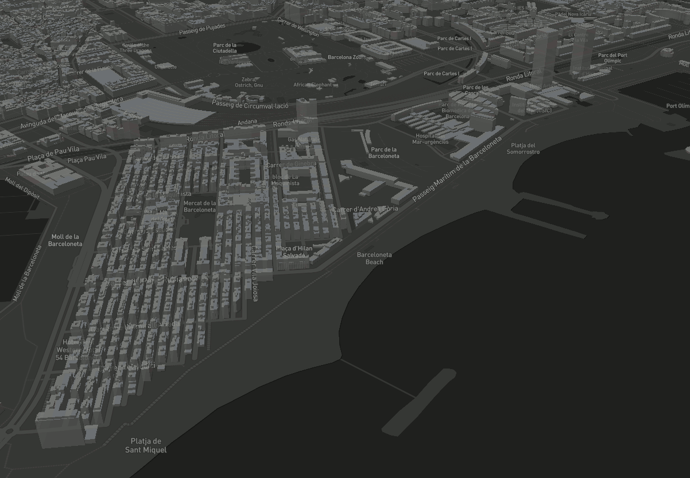

Cómo consumirlas (mapbox gl js)
¿Y sin teselas? Cargar datos directamente en GeoJSON

1 2 3 4 5 6 7 8 9 10 11 12 13 14 15 16 17 18 19 20 21 22 23 24 25 26 27 28 29 30 31 32 | <script> mapboxgl.accessToken = 'pk.eyJ1IjoiYm9sb2xsbyIsImEiOiI3MDlqRnJJIn0.m-zCTI_UaEOCiCakGUDwcw'; var map = new mapboxgl.Map({ container: 'map', // id del elemento HTML que contendrá el mapa style: 'mapbox://styles/mapbox/dark-v9', // Ubicación del estilo center: [2.175, 41.39], // Ubicación inicial zoom: 13, // Zoom inicial bearing: -45, // Ángulo de rotación inicial hash: true // Permite ir guardando la posición del mapa en la URL }); // Agrega controles de navegación (zoom, rotación) al mapa: map.addControl(new mapboxgl.NavigationControl()); // Agregar el control de inspección map.addControl(new MapboxInspect()); map.on('load', function () { map.addSource('metro', { type: 'geojson', data: 'http://mappingandco.github.io/geojsonDB/barcelona/subway.geojson' }); map.addLayer({ 'id': 'metro', 'source': 'metro', 'type': 'line', 'paint': { 'line-color': ['get', 'stroke'], 'line-width': 4 } }); }); </script> |
Demo GeoJSON
Selección y filtrado

1 2 3 4 5 6 7 8 9 10 11 12 13 14 15 16 17 18 19 20 21 22 23 24 25 26 27 28 29 30 31 32 33 34 35 36 37 38 39 40 41 | <script> map.on('load', function () { map.addSource('metro', { type: 'geojson', data: 'http://mappingandco.github.io/geojsonDB/barcelona/subway.geojson' }); map.addLayer({ 'id': 'metro', 'type': 'line', 'source': 'metro', 'paint': { 'line-color': ['get', 'stroke'], 'line-width': 4 } }); map.addLayer({ 'id': 'metro-highlighted', 'type': 'line', 'source': 'metro', 'paint': { 'line-color': ['get', 'stroke'], 'line-width': 21 }, 'filter': ['in', 'OGC_FID', ''] }); map.on('mousemove', 'metro', function(e) { if (e.features.length > 0) { var feature = e.features[0]; map.setFilter('metro-highlighted', ['in', 'OGC_FID', feature.properties.OGC_FID]); } }); map.on('mouseleave', 'metro', function() { map.setFilter('metro-highlighted', ['in', 'OGC_FID', '']); overlay.style.display = 'none'; }); }); </script> |
Demo Hover
Documentación
Extrusión 3D

1 2 3 4 5 6 7 8 9 10 11 12 13 14 15 16 | map.addSource("buildings", { "type": "vector", "url": "http://tileserver.fonts.cat/data/buildingpart.json" }); map.addLayer({ "id": "buildings", "source": "buildings", "source-layer": "buildingpart", "type": "fill-extrusion", "paint": { "fill-extrusion-opacity": 0.75, "fill-extrusion-color": "#808080", "fill-extrusion-height": ["*", 3, ["get", "floors"]] } }); |
Demo Edificios 3D